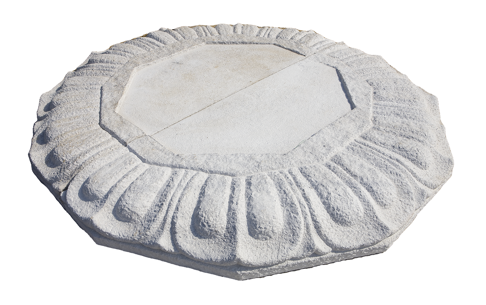

석장
석조물을 제작하는 기술

연원
주로 사찰이나 궁궐 등에 남아있는 불상, 석탑, 석교 등이 석조물을 제작하는 장인의 작품이라 할 수 있다. 삼국시대부터 오늘에 이르기까지 다양하고 다채로운 석조문화재가 전해지고 있어 우리나라의 석조물 제작 기술이 상당한 수준에 이르렀음을 알 수 있다.
사용재료
전국적으로 가장 많이 분포되어 있는 화강암을 비롯하여 납석과 청석, 대리석 등이 활용되고 있다.
특징
전통적인 석장들은 망치, 정 등 수공구를 사용하여 돌이라는 단단한 물질에 생명력을 불어넣어 수준 높은 석조문화를 탄생시키고 발전시켜왔다.
전승자
| 보유구분 | 이름 | 성별 | 기예능 | 지역 | 인정일 |
|---|---|---|---|---|---|
| 보유자 | 이의상(李義祥) | 남 | 석구조물 | 경기 | 2007-09-17 |
| 보유자 | 이재순(李在珣) | 남 | 석조각 | 경기 | 2007-09-17 |
소재지
경기도